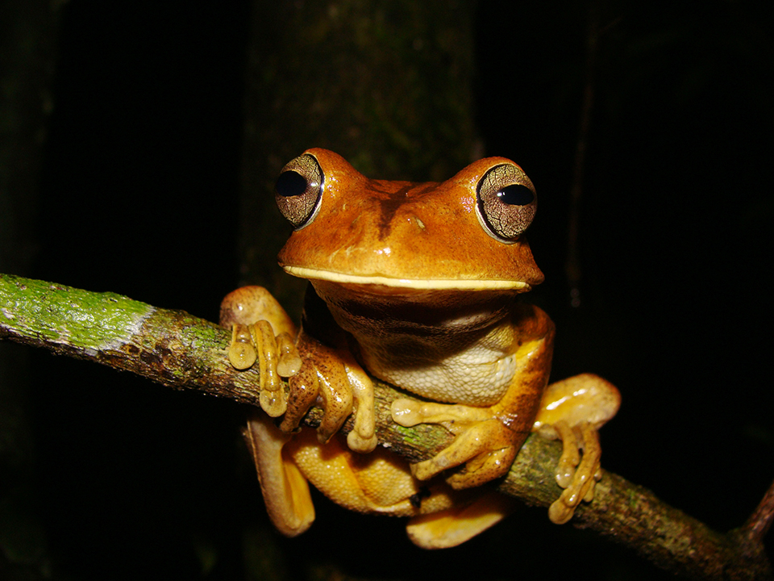
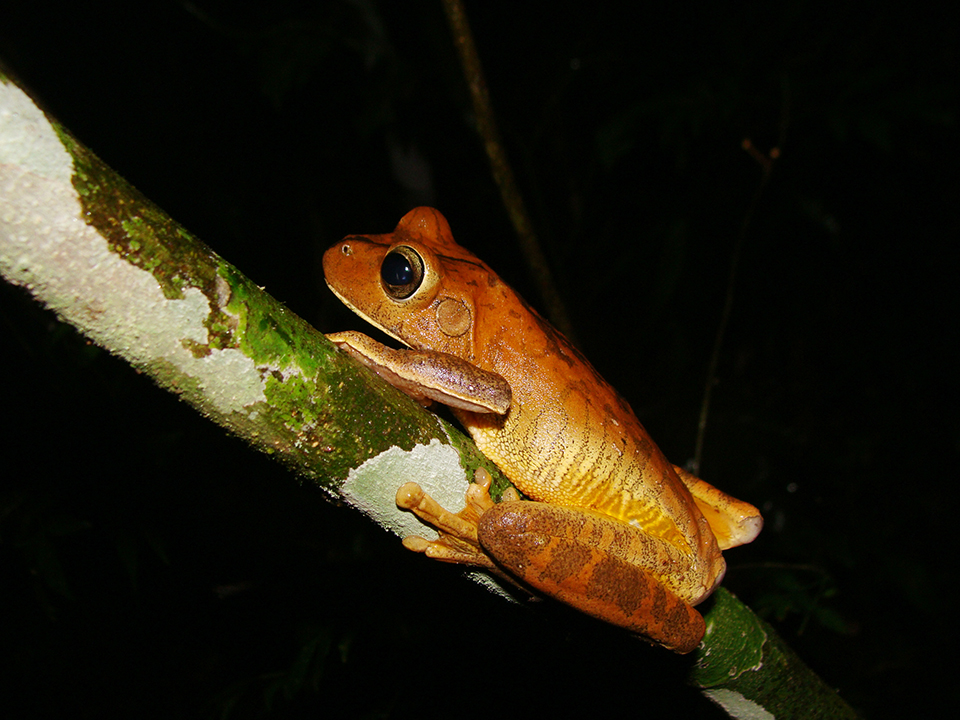

É considerado um animal de tamanho médio-grande, e muito comum na Floresta com Araucárias. De cor castanha ou alaranjada geralmente possui uma linha preta que vai da ponta do focinho até o meio do dorso. Mais facilmente encontrada de dezembro a fevereiro. Vive próximo a rios e lagos permanentes na Mata Atlântica desde a Argentina até o Nordeste do Brasil, tanto em ambientes florestados quanto abertos, onde vocaliza de cima de árvores e arbustos.
O seu nome se deve à sua vocalização, semelhante a um martelo de ferro batendo em uma bigorna, sendo por isso também chamado de sapo-ferreiro. Possui discos adesivos e membranas interdigitais grandes e volumosas e os machos possuem um tubérculo no quarto dedo, similar a um espinho, utilizado em disputas territoriais com outros machos. O macho constrói um ninho cavado na lama de cerca de 20 cm, nas margens das lagoas. Os ovos, embriões e girinos são aquáticos.
 